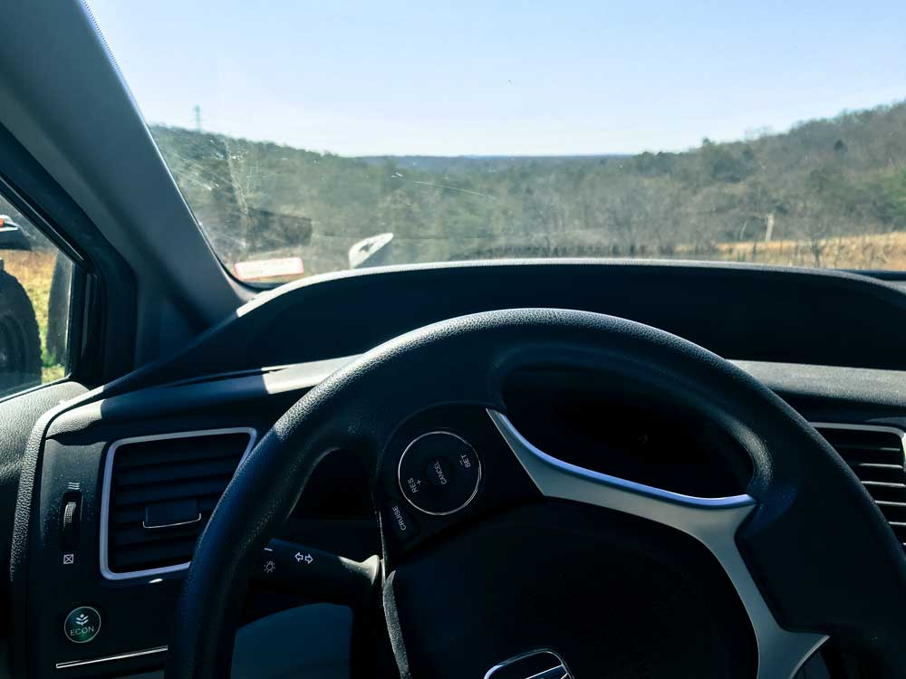

I started my day by waking up to the sunshine flooding through my window. I enjoyed the sun and
looked at Instagram for awhile.
9:00
I brewed myself a cup of coffee and read Anne of Green Gables while relaxing in the living room
with my parents. I also took a shower and got changed into hiking gear.
10:00
Waiting for my boyfriend, Daniel, to be finished up working, I opened my computer and worked on
vectorizing a friend's wedding coaster design for them. I watched Say Yes To The Dress and ate
scrambled eggs for breakfast at the same time.
11:00
I decided to read more of Anne of Green Gables for awhile. I then remembered I needed to water
my plants and went to plant those. I also remembered I had a lot of work to do for my drawing, and I
continued cutting out shapes for my midterm drawing.
12:00

Daniel finally arrived to my house after he finished working. I helped him cut out a bush from
my yard that my Mom wanted to be removed. Dan and I then finally got our stuff together to go hiking on
a trail we had never been before. Hungry, we decided to get Wegman's for lunch which was very close to
the trail we wanted to try.
1:00
I was completely amazed at how large this Webman's was out in Owings Mills. It was by far the
largest grocery store I had ever been in. They had a large buffet area. I decided to get some Sushi and
we shared a box of mac & cheese, chicken tenders, and cauliflower. We ate at Wegman's which had a large
sitting section for people to eat. The food was decent, but not amazing. From there we went on our way
to the trail, Soliders Delight. Annoyingly, along the way I had to take a left at a red light at a busy
intersection because somehow the timer was not working.
2:00
We got out of the car and began the hike down Soldier's Delight trail. The weirdest thing about
the location of the hike is that the entire scenery/environment changed. The plants and trees made it
seem like we were at the beach or near a desert. The start to the hike was not great because there were
many "Safe Zone" signs everywhere, most likely meaning the area around it is a common hunting spot.
Feeling slightly unnerved we trecked on to find these old mining cave holes that were completely
flooded—we could not even see inside of them. More along the trail it began to get seriously muddy. We
had jump from log to log to try and not be submerged by the mud. We also had to weedwack a bit because
the trail was in awful condition. The day before this it rained three inches which Dan and I did not
take much into consideration. Still we
kept moving because we both had waterproof hiking boots on. I was really sadened by the amount of thorny
plants there were that were obviously very invasive. It made the hike a little less enjoyable.
Amazingly, we did not cross paths with any other person until the end where we passed two people.
3:00
Dan and I finished out our hike in tact without any mud or water in our shoes. We felt the hike
was nice, but just ok. We definitely want to return in the summer when the leaves are on the trees so
that there is more to look out. There was no view to see, and we much perfer mountain hiking either way.
Since the hike did not take as long as we thought, I thought we could go to REI to get Chaco's which I
had been wanting to get for a while.
4:00
I tried on multiple Chaco sandals and my feet did not like them at all. They looked horrible of
my feet, and the toe strap hugged them too hard. I tried on Teva's as well and instantly loved them. I
also searched for a Kavu bag, an over the shoulder hiking backpack, but they were all sold out because
of a big sale. I paid for my shoes, and we drove to Daniel's house.
5:00
I watched Fixer Upper for about 20 minutes while snacking on the snack that smiles back. We
drove back to my house and played Gin Rumy while my cat, Petit Louis, sat on my lap and purred. I won
which never ever happens because Daniel wins absolutely everything, so I was in high spirits.
6:00
Dan and I resided to the couch to buy Burnout, a car game, on our PS4. However, we were not able
to play it because of the long download time, so we talked for a while and watched New Girl.
7:00
We went out with my parents to the Towson Tavern for dinner which I had never been to before. I
ordered a Reisling from a Maryland Vineyard called Boordy's. My parents highly discouraged me from
ordering it, but was pleasantly surprised by the wine. I also ordered shrimp Scampi which was just ok.
8:00
We talked at the Towson Tavern for a while. The atmosphere was nice, and it was not too loud
which is a problem at many resturaunts. The food was only ok though. We finished up and drove back to my
house.
9:00
Dan and I wanted to finish the night with a movie. The only issue is that we can never find a
movie we both want to watch. Dan convinced me we needed to watch Indiana Jones which I had never seen
before. We got 30 minutes through, and I thought it was garbage, so we ironically chose to watch Spy
Kids 2 instead (more as a joke I guess, but I also secretly love it).
10:00
We contiued watching Spy Kids 2. The original Spy Kids is arguably the best and the third I
believe is behind.
11:00
We finished up the movie, and I said goodnight to Dan. I went upstairs to brush my teeth, floss,
get in my pajamas, and go to bed.